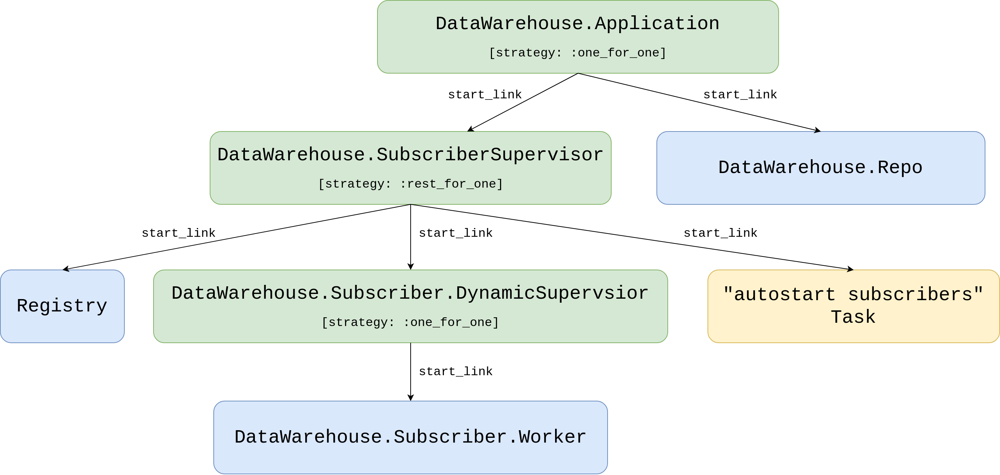

Chapter 13 Store trade events and orders inside the database
In the last chapter, we built a macro-based Core.ServiceSupervisor to eliminate duplicated supervision code.
It works - but if you felt like we were reaching for a sledgehammer to hang a picture frame, you’re not alone.
Macros are powerful, but they add complexity that can make debugging harder and confuse developers unfamiliar with metaprogramming.
Here’s the good news: Elixir provides a simpler tool for exactly this problem.
The Registry module lets us track dynamic processes using plain strings instead of atoms,
and it integrates seamlessly with DynamicSupervisor.
By the end of this chapter, we’ll have a supervision pattern so clean that the Core.ServiceSupervisor becomes obsolete.
But first, we need data to work with. Our trading bot can execute trades, but it has amnesia - every time we restart, all history vanishes. That’s a problem for two reasons:
- Backtesting: We can’t evaluate our strategy against historical data if we don’t store that data.
- Auditing: Any serious trading system needs a record of what happened and when.
In this chapter, we’ll create a data_warehouse application that subscribes to trade events and orders,
persisting them to a database. Along the way, we’ll discover that Registry plus DynamicSupervisor
gives us everything the macro approach provided - with half the complexity.
13.1 Objectives
- overview of requirements
- create a new
data_warehouseapplication in the umbrella - connect to the database using Ecto
- store trade events’ data
- store orders’ data
- implement supervision
13.2 Overview of requirements
In the next chapter, we will test our strategy against historical data - a process called backtesting that I’ll explain in detail when we get there.
What we need to have in place before we will be able to do that is both trade events and orders stored in the database.
Starting with the trade events.
The streamer application could store trade events from Binance inside its database but how would that work
if we would like to introduce another source of non-streamed trade events(ie. flat files, HTTP polling).
It would be better if the Streamer.Binance process would keep on streaming those trade events
as it is and we would create a new application that would subscribe to the existing TRADE_EVENTS:#{symbol} topic and store them in the database.
A similar idea applies to the orders’ data. At this moment the naive application uses the Binance module to place orders.
We could store them inside the naive application’s database but how would that work if we would like to introduce another trading strategy.
Holding data in separate databases for each strategy would cause further complications in future reporting, auditing, etc.
To store trade events’ and orders’ data we will create a new application called data_warehouse inside our umbrella project.
It will subscribe to a TRADE_EVENTS:#{symbol} stream as well as ORDERS:#{symbol} stream,
convert broadcasted data to its own representations(structs) and store it inside the database.
Trade events are already broadcasted to the PubSub topic, orders on the other hand aren’t.
We will need to modify the Naive.Trader module to broadcast the new and updated orders to the ORDERS:#{symbol} topic.
After implementing the basic worker that will store the incoming data(trade events and orders) inside the database, we will look into adding a supervision tree utilizing Elixir Registry. It will allow us to skip registering every worker with a unique atom and will offer an easy lookup to fetch PIDs instead.
13.3 Create a new data_warehouse application in the umbrella
Let’s start by creating a new application called data_warehouse inside our umbrella:
$ cd apps
$ mix new data_warehouse --sup
* creating README.md
* creating .formatter.exs
* creating .gitignore
* creating mix.exs
* creating lib
* creating lib/data_warehouse.ex
* creating lib/data_warehouse/application.ex
* creating test
* creating test/test_helper.exs
* creating test/data_warehouse_test.exs
...13.4 Connect to the database using Ecto
We can now follow similar steps as previously and add required dependencies (like the ecto) to its deps by modifying its mix.exs file:
# /apps/data_warehouse/mix.exs
defp deps do
[
{:binance, "~> 1.0"},
{:decimal, "~> 2.0"},
{:ecto_sql, "~> 3.0"},
{:ecto_enum, "~> 1.4"},
{:phoenix_pubsub, "~> 2.0"},
{:postgrex, ">= 0.0.0"},
{:streamer, in_umbrella: true}
]
endAdditionally, we added the phoenix_pubsub(to subscribe to the PubSub topic), the streamer application(to use its Streamer.Binance.TradeEvent struct),
the decimal module to convert numbers and the binance package(to pattern match its structs).
We can now jump back to the terminal to install added dependencies and generate a new Ecto.Repo module:
$ mix deps.get
...
$ cd apps/data_warehouse
$ mix ecto.gen.repo -r DataWarehouse.Repo
* creating lib/data_warehouse
* creating lib/data_warehouse/repo.ex
* updating ../../config/config.exsBefore we will be able to create migrations that will create our tables we need to update the generated configuration inside the config/config.exs file:
# /config/config.exs
...
config :data_warehouse, DataWarehouse.Repo,
database: "data_warehouse", # <= update this line
username: "postgres", # <= update this line
password: "postgres", # <= update this line
hostname: "localhost"
...
config :data_warehouse, # <= add this line
ecto_repos: [DataWarehouse.Repo] # <= add this lineand add the DataWarehouse.Repo module to the children list of the DataWarehouse.Application’s process:
# /apps/data_warehouse/lib/data_warehouse/application.ex
...
children = [
{DataWarehouse.Repo, []}
]
...The last step will be to create a database by running mix ecto.create -r DataWarehouse.Repo command.
This ends up the setup of the Ecto - we can now move on to the implementation of storing the orders and the trade events.
13.5 Store trade events’ data
The first step to store trade events inside the database will be to create a table that will hold our data. We will start by creating the migration:
$ cd apps/data_warehouse
$ mix ecto.gen.migration create_trade_events
* creating priv/repo/migrations
* creating priv/repo/migrations/20210222224514_create_trade_events.exsThe Streamer.Binance.TradeEvent struct will serve as a list of columns for our new trade_events table.
Please note that we’ll store price and quantity as :decimal rather than :string to enable mathematical
comparisons in SQL queries (e.g., WHERE price > 1000.5).
String columns would perform lexicographic comparisons where "9.0" > "10.0",
which would give incorrect results. We’ll use :decimal instead of :float to
maintain exact precision for financial calculations without floating-point rounding errors.
Here’s the full implementation of our migration:
# /apps/data_warehouse/priv/repo/migrations/20210222224514_create_trade_events.exs
defmodule DataWarehouse.Repo.Migrations.CreateTradeEvents do
use Ecto.Migration
def change do
create table(:trade_events, primary_key: false) do
add(:id, :uuid, primary_key: true)
add(:event_type, :text)
add(:event_time, :bigint)
add(:symbol, :text)
add(:trade_id, :bigint)
add(:price, :decimal)
add(:quantity, :decimal)
add(:trade_time, :bigint)
add(:buyer_market_maker, :bool)
timestamps()
end
end
endWe added the additional id field to easily identify each trade event and our timestamps for monitoring.
Let’s run the migration so it will create a new trade_events table for us:
The next step will be to create a new directory called schema inside the
apps/data_warehouse/lib/data_warehouse directory.
Inside it, we need to create a new schema file called trade_event.ex.
We can copy across the same columns from the migration straight to schema:
# /apps/data_warehouse/lib/data_warehouse/schema/trade_event.ex
defmodule DataWarehouse.Schema.TradeEvent do
use Ecto.Schema
@primary_key {:id, :binary_id, autogenerate: true}
schema "trade_events" do
field(:event_type, :string)
field(:event_time, :integer)
field(:symbol, :string)
field(:trade_id, :integer)
field(:price, :decimal)
field(:quantity, :decimal)
field(:trade_time, :integer)
field(:buyer_market_maker, :boolean)
timestamps()
end
endAt this moment we should be able to execute crud(create, read[select], update, delete) operations over the table using the above struct.
Currently, we can already store the trade events’ data inside the database so we can move on to collecting it.
Trade events are getting broadcasted by the Streamer.Binance process here:
# /apps/streamer/lib/streamer/binance.ex
...
Phoenix.PubSub.broadcast(
Streamer.PubSub,
"TRADE_EVENTS:#{trade_event.symbol}",
trade_event
)
...We will implement a subscriber process that will be given a PubSub topic and will store incoming data inside the database.
Let’s start by creating a new folder called subscriber inside the
apps/data_warehouse/lib/data_warehouse directory together with a new file called worker.ex inside it:
# /apps/data_warehouse/lib/data_warehouse/subscriber/worker.ex
defmodule DataWarehouse.Subscriber.Worker do
use GenServer
require Logger
defmodule State do
@enforce_keys [:topic]
defstruct [:topic]
end
def start_link(topic) do
GenServer.start_link(
__MODULE__,
topic,
name: :"#{__MODULE__}-#{topic}"
)
end
def init(topic) do
{:ok,
%State{
topic: topic
}}
end
endAt this moment it’s just a bog-standard implementation of the GenServer with a state struct containing a single key(:topic).
Note: We’re using an atom-based name here (:"#{__MODULE__}-#{topic}").
This works for now, but we’ll replace it with Registry-based naming in the supervision section.
We need to update the init/1 function to subscribe to the PubSub topic:
# /apps/data_warehouse/lib/data_warehouse/subscriber/worker.ex
def init(topic) do
Logger.info("DataWarehouse worker is subscribing to #{topic}")
Phoenix.PubSub.subscribe(
Streamer.PubSub,
topic
)
...Next, we need to add a handler for received messages:
# /apps/data_warehouse/lib/data_warehouse/subscriber/worker.ex
def handle_info(%Streamer.Binance.TradeEvent{} = trade_event, state) do
opts =
trade_event
|> Map.from_struct()
|> Map.update!(:price, &Decimal.from_float/1)
|> Map.update!(:quantity, &Decimal.new/1)
struct!(DataWarehouse.Schema.TradeEvent, opts)
|> DataWarehouse.Repo.insert()
{:noreply, state}
endAs we did in the case of the Naive.Trader, all incoming messages trigger a handle_info/2 callback with the contents of
the message and the current state of the subscriber worker.
We just convert that incoming trade event to a map and then that map to the TradeEvent struct that gets inserted into the database.
That’s all the code we need to store trade events. Let’s test it in the interactive shell:
$ iex -S mix
...
iex(1)> Streamer.start_streaming("XRPUSDT")
00:48:30.147 [info] Starting Elixir.Streamer.Binance worker for XRPUSDT
{:ok, #PID<0.395.0>}
iex(2)> DataWarehouse.Subscriber.Worker.start_link("TRADE_EVENTS:XRPUSDT")
00:49:48.204 [info] DataWarehouse worker is subscribing to TRADE_EVENTS:XRPUSDT
{:ok, #PID<0.405.0>}After a couple of minutes we can check the database using psql:
$ psql -Upostgres -h127.0.0.1
Password for user postgres:
...
postgres=# \c data_warehouse;
You are now connected to database "data_warehouse" as user "postgres".
data_warehouse=# \x
Expanded display is on.
data_warehouse=# SELECT * FROM trade_events;
-[ RECORD 1 ]------+-------------------------------------
id | f6eae686-946a-4e34-9c33-c7034c2cad5d
event_type | trade
event_time | 1614041388236
symbol | XRPUSDT
trade_id | 152765072
price | 0.56554000
quantity | 1199.10000000
trade_time | 1614041388235
buyer_market_maker | f
inserted_at | 2021-02-23 00:49:48
...As we can see in the above output, trade events are now getting stored inside the database.
13.6 Store orders’ data
In the same fashion as with trade events’ data above, to store orders data we will create an orders table inside a new migration:
$ cd apps/data_warehouse
$ mix ecto.gen.migration create_orders
* creating priv/repo/migrations/20210222224522_create_orders.exsThe list of columns for this table will be a copy of Binance.Order
struct returned from the Binance exchange:
# /apps/data_warehouse/priv/repo/migrations/20210222224522_create_orders.exs
defmodule DataWarehouse.Repo.Migrations.CreateOrders do
use Ecto.Migration
def change do
create table(:orders, primary_key: false) do
add(:order_id, :bigint, primary_key: true)
add(:client_order_id, :text)
add(:symbol, :text)
add(:price, :decimal)
add(:original_quantity, :decimal)
add(:executed_quantity, :decimal)
add(:cummulative_quote_quantity, :decimal)
add(:status, :text)
add(:time_in_force, :text)
add(:type, :text)
add(:side, :text)
add(:stop_price, :decimal)
add(:iceberg_quantity, :decimal)
add(:time, :bigint)
add(:update_time, :bigint)
timestamps()
end
end
endWe updated all of the shortened names like orig_qty to full names like original_quantity.
Let’s run the migration so it will create a new orders table for us:
We can copy the above fields list to create a schema module.
First, let’s create a new file called order.ex inside the apps/data_warehouse/lib/data_warehouse/schema directory:
# /apps/data_warehouse/lib/data_warehouse/schema/order.ex
defmodule DataWarehouse.Schema.Order do
use Ecto.Schema
@primary_key {:order_id, :integer, autogenerate: false}
schema "orders" do
field(:client_order_id, :string)
field(:symbol, :string)
field(:price, :decimal)
field(:original_quantity, :decimal)
field(:executed_quantity, :decimal)
field(:cummulative_quote_quantity, :decimal)
field(:status, :string)
field(:time_in_force, :string)
field(:type, :string)
field(:side, :string)
field(:stop_price, :decimal)
field(:iceberg_quantity, :decimal)
field(:time, :integer)
field(:update_time, :integer)
timestamps()
end
endWe can now add a handler to our DataWarehouse.Subscriber.Worker that will convert the Binance.Order struct
to DataWarehouse.Schema.Order and store data inside the database:
# /apps/data_warehouse/lib/data_warehouse/subscriber/worker.ex
def handle_info(%Binance.Order{} = order, state) do
data =
order
|> Map.from_struct()
|> Map.update!(:price, &Decimal.from_float/1)
|> Map.update!(:stop_price, &Decimal.new/1)
struct(DataWarehouse.Schema.Order, data)
|> Map.merge(%{
original_quantity: Decimal.new(order.orig_qty),
executed_quantity: Decimal.new(order.executed_qty),
cummulative_quote_quantity: Decimal.new(order.cummulative_quote_qty),
iceberg_quantity: Decimal.new(order.iceberg_qty)
})
|> DataWarehouse.Repo.insert(
on_conflict: :replace_all,
conflict_target: :order_id
)
{:noreply, state}
end
...In the above code, we are copying the matching fields using the struct/2 function but all other fields
that aren’t 1 to 1 between two structs won’t be copied,
so we need to merge them in the second step(using the Map.merge/2 function).
We are also using the on_conflict: :replace_all option to make the insert/2 function act as
it would be upsert/2(to avoid writing separate logic for inserting and updating the orders).
Having all of this in place we will now be able to store broadcasted orders’ data in the database but there’s nothing actually broadcasting them.
We need to modify the Naive.Trader module to broadcast the Binance.Order whenever it places buy/sell orders:
# /apps/naive/lib/naive/trader.ex
...
# inside placing initial buy order callback
{:ok, %Binance.OrderResponse{} = order} =
@binance_client.order_limit_buy(symbol, quantity, price, "GTC")
:ok = broadcast_order(order)
...
# inside buy order filled callback
def handle_info(
%TradeEvent{
...
},
%State{
...
} ...
) ... do
{:ok, %Binance.Order{} = current_buy_order} =
@binance_client.get_order(
symbol,
timestamp,
order_id
)
buy_order_response = convert_order_to_order_response(current_buy_order)
:ok = broadcast_order(buy_order_response)
...
{:ok, %Binance.OrderResponse{} = order} =
@binance_client.order_limit_sell(symbol, quantity, sell_price, "GTC")
:ok = broadcast_order(order)
...
# inside sell order filled callback
def handle_info(
%TradeEvent{
...
},
%State{
...
} ...
) ... do
{:ok, %Binance.Order{} = current_sell_order} =
@binance_client.get_order(
symbol,
timestamp,
order_id
)
sell_order_response = convert_order_to_order_response(current_sell_order)
:ok = broadcast_order(sell_order_response)
...The above four places send the Binance.OrderResponse structs - our broadcast_order/1 function needs to convert them to the Binance.Order structs.
Add the following at the bottom of the Naive.Trader module:
# /apps/naive/lib/naive/trader.ex
defp broadcast_order(%Binance.OrderResponse{} = response) do
order =
response
|> convert_to_order()
Phoenix.PubSub.broadcast(
Streamer.PubSub,
"ORDERS:#{order.symbol}",
order
)
end
defp convert_to_order(%Binance.OrderResponse{} = response) do
data =
response
|> Map.from_struct()
struct(Binance.Order, data)
|> Map.merge(%{
cummulative_quote_qty: "0.00000000",
stop_price: "0.00000000",
iceberg_qty: "0.00000000",
is_working: true
})
endAs DataWarehouse.Subscriber.Worker process expects only the Binance.Order structs to be broadcasted,
we first convert the passed Binance.OrderResponse struct to the Binance.Order struct
and only then broadcast it to the PubSub topic.
The converting logic as previously uses the struct/2 function but it also merges in default values that
are missing from the much smaller Binance.OrderResponse struct(with comparison to the Binance.Order).
At this moment we will be able to store orders inside the database and we can check that by running:
$ iex -S mix
...
iex(1)> DataWarehouse.Subscriber.Worker.start_link("ORDERS:XRPUSDT")
22:37:43.043 [info] DataWarehouse worker is subscribing to ORDERS:XRPUSDT
{:ok, #PID<0.400.0>}
iex(2)> Naive.start_trading("XRPUSDT")
22:38:39.741 [info] Starting Elixir.Naive.SymbolSupervisor worker for XRPUSDT
22:38:39.832 [info] Starting new supervision tree to trade on XRPUSDT
{:ok, #PID<0.402.0>}
22:38:41.654 [info] Initializing new trader(1614119921653) for XRPUSDT
iex(3)> Streamer.start_streaming("XRPUSDT")
22:39:23.786 [info] Starting Elixir.Streamer.Binance worker for XRPUSDT
{:ok, #PID<0.412.0>}
22:39:27.187 [info] The trader(1614119921653) is placing a BUY order for XRPUSDT @ 37.549,
quantity: 5.326
22:39:27.449 [info] The trader(1614119921653) is placing a SELL order for XRPUSDT @ 37.578,
quantity: 5.326.At this moment inside the DataWarehouse’s database we should see orders:
$ psql -Upostgres -h127.0.0.1
Password for user postgres:
...
postgres=# \c data_warehouse;
You are now connected to database "data_warehouse" as user "postgres".
data_warehouse=# \x
Expanded display is on.
data_warehouse=# SELECT * FROM orders;
-[ RECORD 1 ]--------------+---------------------------------
order_id | 1
client_order_id | C81E728D9D4C2F636F067F89CC14862C
symbol | XRPUSDT
price | 38.16
original_quantity | 5.241
executed_quantity | 0.00000000
cummulative_quote_quantity | 0.00000000
status | FILLED
time_in_force | GTC
type | LIMIT
side | BUY
stop_price | 0.00000000
iceberg_quantity | 0.00000000
time | 1614120906320
update_time | 1614120906320
inserted_at | 2021-02-23 22:55:10
updated_at | 2021-02-23 22:55:10
-[ RECORD 2 ]--------------+---------------------------------
order_id | 2
client_order_id | ECCBC87E4B5CE2FE28308FD9F2A7BAF3
symbol | XRPUSDT
price | 38.19
original_quantity | 5.241
executed_quantity | 0.00000000
cummulative_quote_quantity | 0.00000000
status | NEW
time_in_force | GTC
type | LIMIT
side | SELL
stop_price | 0.00000000
iceberg_quantity | 0.00000000
time |
update_time |
inserted_at | 2021-02-23 22:55:10
updated_at | 2021-02-23 22:55:10The first record above got inserted and updated as its state is “FILLED”, the second one wasn’t updated yet as it’s still in “NEW” state - that confirms that the upsert trick works.
That finishes the implementation of storing orders inside the database.
At this point we can manually start workers to store data, but there’s no fault tolerance.
If a worker crashes, the data stops flowing and nobody restarts it.
Let’s fix that by building a proper supervision tree - and while we’re at it,
we’ll discover a pattern that makes our macro-based Core.ServiceSupervisor obsolete.
13.7 Implement supervision
The supervision tree for the data_warehouse application will be similar to ones from the naive and streamer apps
but different enough to not use the Core.ServiceSupervisor abstraction.
For example, our schema uses a topic column instead of symbol. We could update Core.ServiceSupervisor to accept a configurable column name,
but that’s adding complexity to solve a problem we created by overengineering in the first place.
There’s a deeper issue too: we’re registering every worker with an atom name. Atoms aren’t garbage collected - once created, they live forever in the VM’s atom table. With enough symbols and topics, we could eventually hit Erlang’s atom limit(about 1 million by default). That’s unlikely in practice, but it’s a code smell that suggests we’re using the wrong tool.
The better approach is to combine DynamicSupervisor with Registry.
The DynamicSupervisor will supervise the Subscriber.Workers and instead of keeping track of them by registering them
using atoms we will start them :via Elixir Registry.
We will add all functionality that we implemented for naive and streamer applications.
We will provide the functions to start and stop storing data on passed PubSub topics
as well as store those topics inside the database so storing will be autostarted.
13.7.1 Create subscriber_settings table
To provide autostarting function we need to create a new migration that will create the subscriber_settings table:
$ cd apps/data_warehouse
$ mix ecto.gen.migration create_subscriber_settings
* creating priv/repo/migrations/20210227230123_create_subscriber_settings.exsAt this moment we can copy the code to create the settings table(enum and index as well)
from the streamer application and tweak it to fit the data_warehouse application.
So the first important change (besides updating namespaces from Streamer to DataWarehouse)
will be to make a note that we have a setting per topic - not per symbol as for the naive and streamer applications:
# /apps/data_warehouse/priv/repo/migrations/20210227230123_create_subscriber_settings.exs
defmodule DataWarehouse.Repo.Migrations.CreateSubscriberSettings do
use Ecto.Migration
alias DataWarehouse.Schema.SubscriberStatusEnum
def change do
SubscriberStatusEnum.create_type()
create table(:subscriber_settings, primary_key: false) do
add(:id, :uuid, primary_key: true)
add(:topic, :text, null: false)
add(:status, SubscriberStatusEnum.type(), default: "off", null: false)
timestamps()
end
create(unique_index(:subscriber_settings, [:topic]))
end
endThe schema and enum are nearly identical to the streamer versions - copy them and update the namespaces:
$ cp apps/streamer/lib/streamer/schema/settings.ex \
apps/data_warehouse/lib/data_warehouse/schema/subscriber_settings.ex
$ cp apps/streamer/lib/streamer/schema/streaming_status_enum.ex \
apps/data_warehouse/lib/data_warehouse/schema/subscriber_status_enum.exAfter copying, update symbol to topic and change the table name in
DataWarehouse.Schema.SubscriberSettings:
# /apps/data_warehouse/lib/data_warehouse/schema/subscriber_settings.ex
defmodule DataWarehouse.Schema.SubscriberSettings do
use Ecto.Schema
alias DataWarehouse.Schema.SubscriberStatusEnum
@primary_key {:id, :binary_id, autogenerate: true}
schema "subscriber_settings" do
field(:topic, :string)
field(:status, SubscriberStatusEnum)
timestamps()
end
endInside apps/data_warehouse/lib/data_warehouse/schema/subscriber_status_enum.ex we need to swap references
of Streamer to DataWarehouse and references of StreamingStatusEnum to SubscriberStatusEnum:
# /apps/data_warehouse/lib/data_warehouse/schema/subscriber_status_enum.ex
import EctoEnum
defenum(DataWarehouse.Schema.SubscriberStatusEnum, :subscriber_status, [:on, :off])Don’t forget to run the migration:
At this moment we have all pieces in place to execute queries on our new table.
In this place, we can think about the seeding script. For the data_warehouse specifically,
we won’t need to provide that script as we don’t know in advance what topic names we will use.
Instead of seeding settings in advance, our code will “upsert”(using insert function)
settings when start_storing/1 or stop_storing/1 are called.
13.7.2 Redesign supervision using Registry
We can now focus on the supervision tree. As with the naive and streamer applications,
we’ll need an additional supervision level for the autostart Task - plus, for data_warehouse, the Registry.
The full supervision tree will look as follows:

Everything looks very similar to the supervision tree that we created in the streamer and the naive applications
but there’s an additional Registry that is supervised by the SubscriberSupervisor process.
The idea is that inside the Worker module’s start_link/1 we will register worker processes
using :via tuple.
Internally, GenServer will utilize Registry’s functions like register_name/2 to add process
to the registry under the topic string. This way we will be able to retrieve PIDs assigned to
topics using those topic strings instead of registering each worker process with an atom name.
Just as previously the DynamicSupervisor will be in charge of supervising the Worker processes
and it won’t be even aware that we are using the Registry to keep track of topic => PID association.
This is the payoff for the atom concern we flagged back in Chapter 5.
Instead of creating atoms like :"Naive.SymbolSupervisor-XRPUSDT" for every symbol,
we now use plain strings as Registry keys.
No atom table growth, no risk of hitting the VM’s atom limit - just clean, garbage-collectible strings.
And here’s the best part: this entire pattern required zero macros.
13.7.3 Create the DataWarehouse.Subscriber.DynamicSupervisor module
Let’s start by creating a new file called dynamic_supervisor.ex inside the
apps/data_warehouse/lib/data_warehouse/subscriber directory and put default dynamic supervisor implementation inside:
# /apps/data_warehouse/lib/data_warehouse/subscriber/dynamic_supervisor.ex
defmodule DataWarehouse.Subscriber.DynamicSupervisor do
use DynamicSupervisor
def start_link(_arg) do
DynamicSupervisor.start_link(__MODULE__, [], name: __MODULE__)
end
def init(_arg) do
DynamicSupervisor.init(strategy: :one_for_one)
end
endAs we will put all our logic related to autostarting, starting and stopping inside this module we can already add aliases, import and require:
# /apps/data_warehouse/lib/data_warehouse/subscriber/dynamic_supervisor.ex
require Logger
alias DataWarehouse.Repo
alias DataWarehouse.Schema.SubscriberSettings
alias DataWarehouse.Subscriber.Worker
import Ecto.Query, only: [from: 2]
@registry :subscriber_workersAdditionally, we added the @registry module attribute that we will use to retrieve PID for the specific topic.
We can move on to implementing autostart_workers/0 which will look very similar to the ones
that we implemented in the streamer and the naive applications:
# /apps/data_warehouse/lib/data_warehouse/subscriber/dynamic_supervisor.ex
...
def autostart_workers do
Repo.all(
from(s in SubscriberSettings,
where: s.status == "on",
select: s.topic
)
)
|> Enum.map(&start_child/1)
end
defp start_child(args) do
DynamicSupervisor.start_child(
__MODULE__,
{Worker, args}
)
endWe can see that we are querying the database for a list of topics(not symbols) and we are calling start_child/2 for each result.
The start_worker/1 is where the Registry will shine as we won’t need
to check if there’s already a process running for that topic - we can leave that check to the Registry.
If there’s a process already running for that topic it will just return a tuple starting with :error atom:
# /apps/data_warehouse/lib/data_warehouse/subscriber/dynamic_supervisor.ex
...
def start_worker(topic) do
Logger.info("Starting storing data from #{topic} topic")
update_status(topic, "on")
start_child(topic)
end
...
defp update_status(topic, status)
when is_binary(topic) and is_binary(status) do
%SubscriberSettings{
topic: topic,
status: status
}
|> Repo.insert(
on_conflict: :replace_all,
conflict_target: :topic
)
endSince we’re not seeding the database with default settings, we use the same upsert pattern we used for orders.
Last function in this module will be stop_worker/1 which uses private stop_child/1 function.
The stop_child/1 function shows how to retrieve PID of the process assigned to the passed topic:
# /apps/data_warehouse/lib/data_warehouse/subscriber/dynamic_supervisor.ex
...
def stop_worker(topic) do
Logger.info("Stopping storing data from #{topic} topic")
update_status(topic, "off")
stop_child(topic)
end
...
defp stop_child(args) do
case Registry.lookup(@registry, args) do
[{pid, _}] -> DynamicSupervisor.terminate_child(__MODULE__, pid)
_ -> Logger.warning("Unable to locate process assigned to #{inspect(args)}")
end
endThat’s the full implementation of DataWarehouse.Subscriber.DynamicSupervisor -
and it’s nearly as slim as our macro-based version from the last chapter, but without any metaprogramming.
13.7.4 Register Worker processes using :via
The above DynamicSupervisor module assumes that Workers are registered inside the Registry -
to make this happen we will need to update the start_link/1 function of the
DataWarehouse.Subscriber.Worker module:
# /apps/data_warehouse/lib/data_warehouse/subscriber/worker.ex
...
def start_link(topic) do
GenServer.start_link(
__MODULE__,
topic,
name: via_tuple(topic)
)
end
...
defp via_tuple(topic) do
{:via, Registry, {:subscriber_workers, String.upcase(topic)}}
end
... Passing the :name option to the GenServer’s start_link/3 function we instruct it to
utilize the Registry module to register processes under topic names.
13.7.5 Create a new supervision level for Registry, Task and the DynamicSupervisor
We have the lowest level modules - the Worker and the DynamicSupervisor implemented -
time to add a new Supervisor that will start the Registry, the DynamicSupervisor,
and the autostart storing Task.
First create a new file called subscriber_supervisor.ex inside the apps/data_warehouse/lib/data_warehouse directory:
# /apps/data_warehouse/lib/data_warehouse/subscriber_supervisor.ex
defmodule DataWarehouse.SubscriberSupervisor do
use Supervisor
alias DataWarehouse.Subscriber.DynamicSupervisor
@registry :subscriber_workers
def start_link(_args) do
Supervisor.start_link(__MODULE__, [], name: __MODULE__)
end
def init(_args) do
children = [
{Registry, [keys: :unique, name: @registry]},
{DynamicSupervisor, []},
{Task,
fn ->
DynamicSupervisor.autostart_workers()
end}
]
Supervisor.init(children, strategy: :rest_for_one)
end
endThe important part here will be to match the Registry name to the one defined inside the DynamicSupervisor and the Worker modules.
13.7.6 Link the SubscriberSupervisor to the Application
We need to update the DataWarehouse.Application module to start our new
DataWarehouse.SubscriberSupervisor process as well as register itself under name matching to its module(just for consistency with other applications):
# /apps/data_warehouse/lib/data_warehouse/application.ex
...
def start(_type, _args) do
children = [
{DataWarehouse.Repo, []},
{DataWarehouse.SubscriberSupervisor, []} # <= new module added
]
opts = [strategy: :one_for_one, name: __MODULE__] # <= name updated
Supervisor.start_link(children, opts)
end
...13.7.7 Add interface
The final step will be to add an interface to the DataWarehouse application to start and stop storing:
# /apps/data_warehouse/lib/data_warehouse.ex
alias DataWarehouse.Subscriber.DynamicSupervisor
def start_storing(stream, symbol) do
to_topic(stream, symbol)
|> DynamicSupervisor.start_worker()
end
def stop_storing(stream, symbol) do
to_topic(stream, symbol)
|> DynamicSupervisor.stop_worker()
end
defp to_topic(stream, symbol) do
[stream, symbol]
|> Enum.map(&String.upcase/1)
|> Enum.join(":")
endInside the above functions, we are just doing a couple of sanity checks on the case of the passed arguments assuming that both topics and stream are uppercase.
13.7.8 Test
The interface above was the last step in our implementation, we can now test that all works as expected:
$ iex -S mix
...
iex(1)> DataWarehouse.start_storing("TRADE_EVENTS", "XRPUSDT")
19:34:00.740 [info] Starting storing data from TRADE_EVENTS:XRPUSDT topic
19:34:00.847 [info] DataWarehouse worker is subscribing to TRADE_EVENTS:XRPUSDT
{:ok, #PID<0.429.0>}
iex(2)> DataWarehouse.start_storing("TRADE_EVENTS", "XRPUSDT")
19:34:04.753 [info] Starting storing data from TRADE_EVENTS:XRPUSDT topic
{:error, {:already_started, #PID<0.459.0>}}
iex(3)> DataWarehouse.start_storing("ORDERS", "XRPUSDT")
19:34:09.386 [info] Starting storing data from ORDERS:XRPUSDT topic
19:34:09.403 [info] DataWarehouse worker is subscribing to ORDERS:XRPUSDT
{:ok, #PID<0.431.0>}
BREAK: (a)bort (A)bort with dump (c)ontinue (p)roc info (i)nfo
(l)oaded (v)ersion (k)ill (D)b-tables (d)istribution
^C%
$ iex -S mix
...
19:35:30.058 [info] DataWarehouse worker is subscribing to TRADE_EVENTS:XRPUSDT
19:35:30.062 [info] DataWarehouse worker is subscribing to ORDERS:XRPUSDT
# autostart works ^^^
iex(1)> Naive.start_trading("XRPUSDT")
19:36:45.316 [info] Starting Elixir.Naive.SymbolSupervisor worker for XRPUSDT
19:36:45.417 [info] Starting new supervision tree to trade on XRPUSDT
{:ok, #PID<0.419.0>}
iex(3)>
19:36:47.484 [info] Initializing new trader(1615221407466) for XRPUSDT
iex(2)> Streamer.start_streaming("XRPUSDT")
16:37:39.660 [info] Starting Elixir.Streamer.Binance worker for XRPUSDT
{:ok, #PID<0.428.0>}
...
iex(3)> DataWarehouse.stop_storing("trade_events", "XRPUSDT")
19:39:26.398 [info] Stopping storing data from trade_events:XRPUSDT topic
:ok
iex(4)> DataWarehouse.stop_storing("trade_events", "XRPUSDT")
19:39:28.151 [info] Stopping storing data from trade_events:XRPUSDT topic
19:39:28.160 [warn] Unable to locate process assigned to "trade_events:XRPUSDT"
:ok
iex(5)> [{pid, nil}] = Registry.lookup(:subscriber_workers, "ORDERS:XRPUSDT")
[{#PID<0.417.0>, nil}]
iex(6)> Process.exit(pid, :crash)
true
16:43:40.812 [info] DataWarehouse worker is subscribing to ORDERS:XRPUSDTAs we can see even this simple implementation handles starting, autostarting, and stopping. It also gracefully handles starting workers when one is already running as well as stopping when there are none running.
As a challenge, you could update the naive and the streamer application to use the Registry
and remove the Core.ServiceSupervisor module(together with the core application)
as it was superseded by the above solution -
here’s the link to PR(pull request)
that sums up the required changes.
We now have persistent storage and a cleaner supervision pattern. Here’s what we achieved:
- Created a
data_warehouseapplication that subscribes to PubSub topics and stores incoming data - Implemented handlers for both trade events and orders
- Used
Registrywith:viatuples to track worker processes by topic - no atoms required - Built a complete supervision tree with autostart capability
The key insight is that Registry solves the same “identify processes dynamically” problem as our macro approach,
but without any metaprogramming. We register processes using plain strings (like "TRADE_EVENTS:XRPUSDT"),
look them up when needed, and let the Registry handle all the bookkeeping.
The DynamicSupervisor doesn’t even know we’re using Registry - it just supervises children as usual.
This pattern is so much simpler that the Core.ServiceSupervisor module is now dead weight.
If you completed the challenge to refactor naive and streamer to use Registry,
you’ve already deleted it. If not, I encourage you to try - the PR linked above shows exactly what changes are needed.
So, What’s Next?
With trade events flowing into our database, we finally have the raw material for backtesting.
In the next chapter, we’ll build a Publisher task that streams historical trade events from the database
back through PubSub - essentially replaying the past. Our Naive.Trader won’t know the difference
between live data and historical data, which means we can test our strategy against real market conditions
without risking real money.
This is where all our architectural decisions pay off: the pub/sub model we’ve used from the beginning makes swapping data sources trivial. Same interface, different producer.
[Note] Please remember to run mix format to keep things nice and tidy.
The source code for this chapter(including the above challenge) can be found in the book’s source code repository (branch: chapter_13).